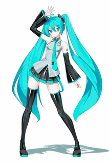

Хатсуне Мику - японская виртуальная певица, созданная компанией Crypton Future Media 31 августа 2007 года.
Для синтеза её голоса используется технология семплирования голоса живой певицы с использованием вокалоид.Голосовым провайдером послужила японская актриса и певица Саки Фудзита. Оригинальный образ был создан японским иллюстратором KEI Garou, также работавшим над внешностью других вокалоидов для Crypton Future Media. Диски с песнями Мику завоёвывали первые позиции в японских чартах.
